Apr 7, 2024
Brain Tumor Segmentation
A brain tumor detection and segmentation project using CNN, ResNet50, and U-Net on medical imaging datasets.
PhD in CSE | Mississippi State University
Graduate Research Assistant at MSU. Ex-Researcher at UTPB and Ex-Machine Learning Engineer at Fusemachines.
PhD in Computer Science & Engineering at Mississippi State University. Graduate Research Assistant working on Signal Processing, Algorithms/ML/Computing, Wireless Communication, Cybersecurity, and Robotics.
Graduate Research Assistant and Student Assistant Editor at University of Texas Permian Basin under Prof. Quan Yuan. Researched polyp segmentation and multimodal AI by fine-tuning models including YOLOv8, U-Net, Detectron, CLIP, ViLBERT, LXMERT, BLIP, and LLaVA, curated university-ready text-image datasets, and supported publication editing for the UTPB Journal of Undergraduate Research and UG Research Book.
Senior Machine Learning Engineer at Fusemachines. Led development of Matrice.ai, a no-code data-centric AI platform that cut deployment time by 40% and development cost by 80%, built ML SaaS products for 5+ hospitals, and automated otoscopy image segmentation that generated $100k annually.
Computer Vision Engineer (R&D) at National Innovation Center. Built vision and navigation systems for service robots, improving edge inference and pathfinding, including collaboration with Mahabir Pun.
Machine Learning Engineer at Fusemachines. Led AI systems for education and phishing detection, supported large-scale deployments, and delivered workshops, trainings, and machine learning content for thousands of learners.
Software Engineer Intern at Omnibluetech. Built Django APIs, AWS background workers, and web apps for document processing, retail, and consultancy systems.
BE in Computer Engineering at Tribhuvan University, Institute of Engineering, working under Prof. Sanjeev Prasad Panday. This is also where I built my foundation in AI, software engineering, mathematics, and vision robotics.

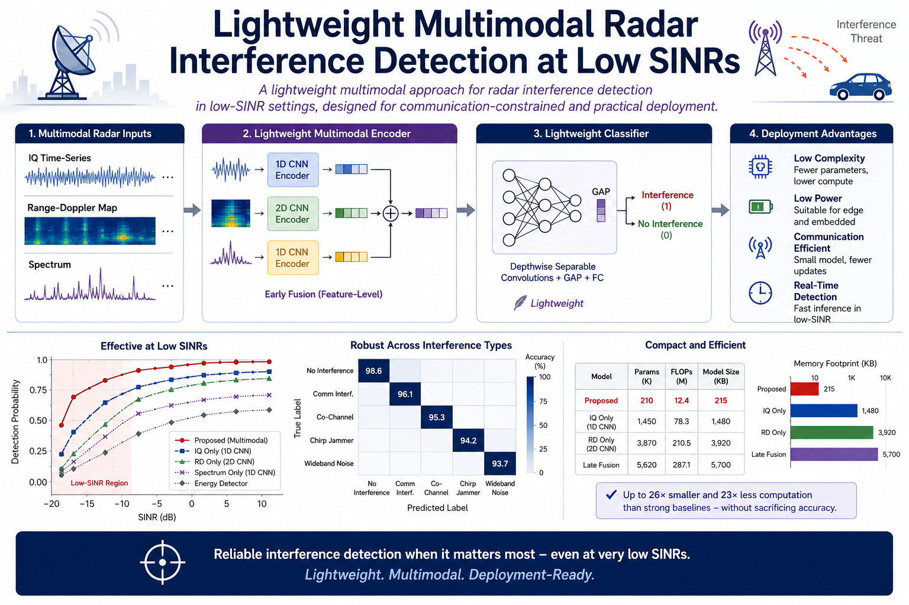
IEEE International Conference on Communications (ICC), 2026
A lightweight multimodal approach for radar interference detection in low-SINR settings, designed for communication-constrained and practical deployment scenarios.
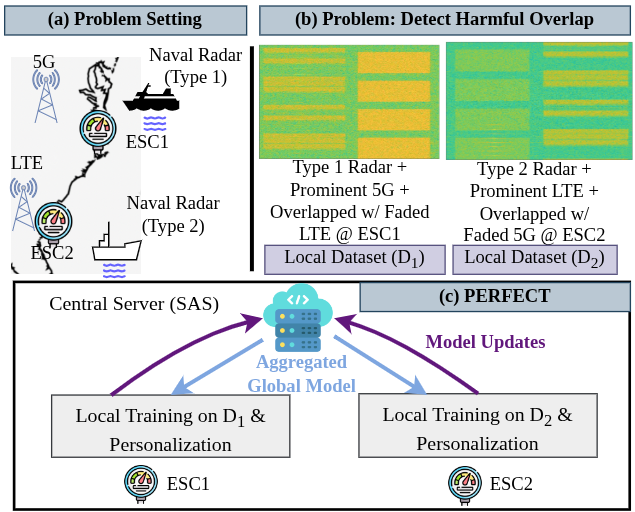
IEEE International Conference on Computer Communications and Networks (ICCCN), 2026
Personalized federated learning for CBRS radar detection, focusing on participant heterogeneity and more adaptive local-global model behavior.
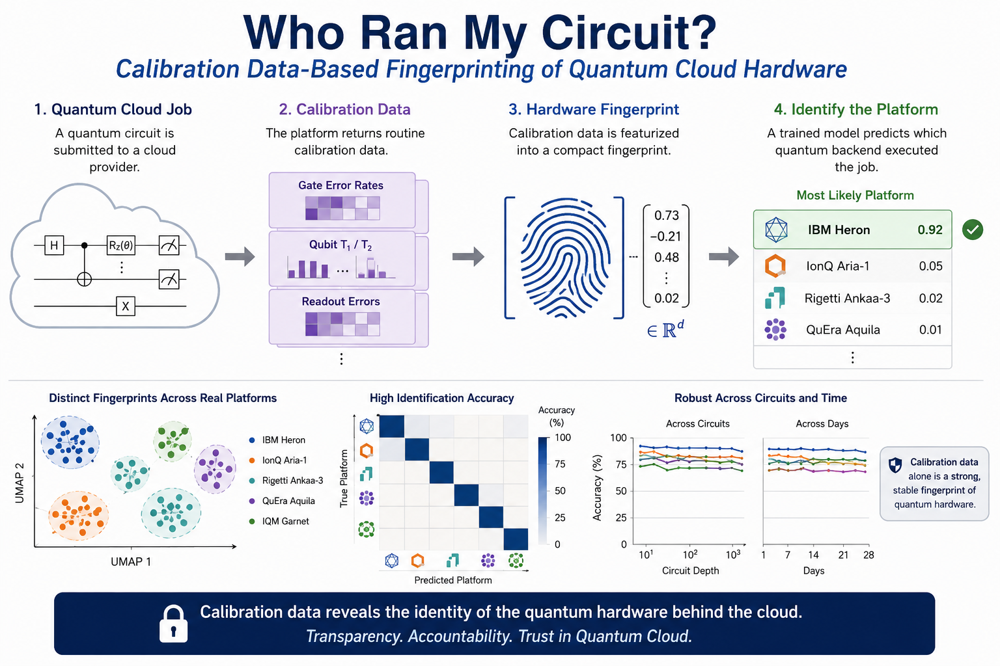
IEEE International Conference on Computer Communications and Networks (ICCCN), 2026
A study of whether calibration data can be used to fingerprint quantum cloud hardware and identify which underlying circuit platform executed a workload.
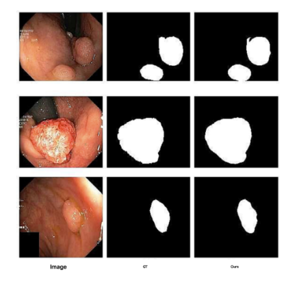
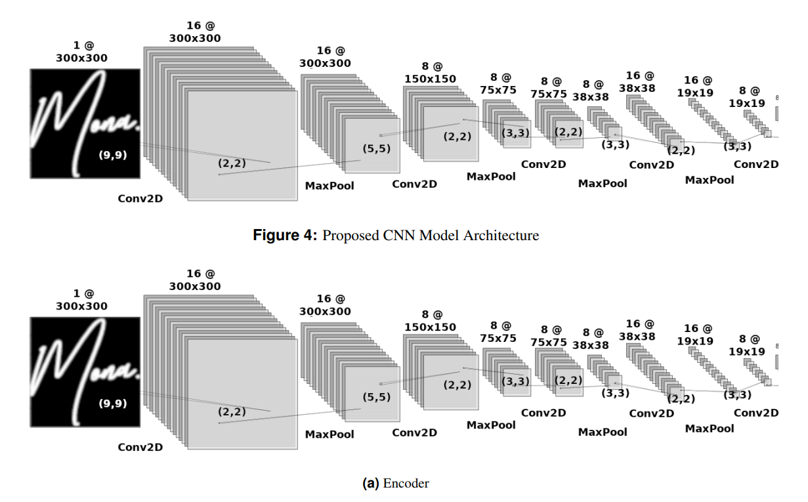
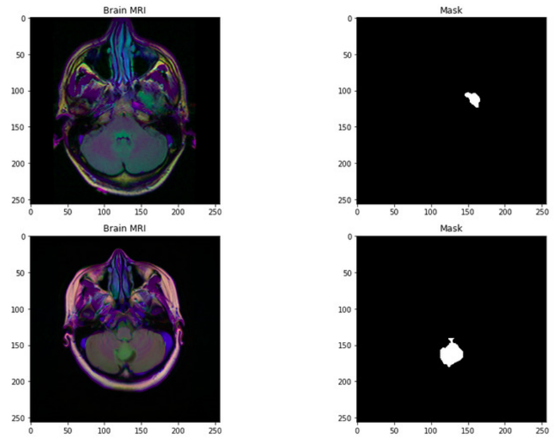
A brain tumor detection and segmentation project using CNN, ResNet50, and U-Net on medical imaging datasets.
The UTPB chatbot built to answer student, faculty, and staff inquiries using NLP and university resources.
A survey and implementation of ML methods for detecting phishing websites and fraudulent URLs.
An autonomous robot project using ROS and computer vision for sensing and AI-driven decision-making.
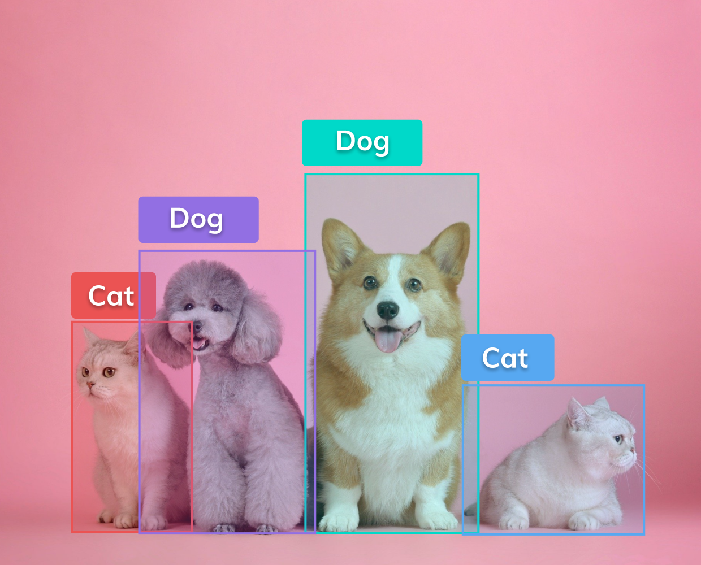
A project combining object detection, face recognition, depth estimation, and tracking into a unified AI vision system.
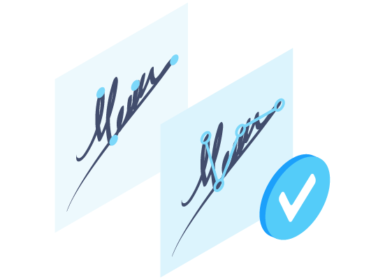
A signature verification system exploring CNN-based writer-dependent models for handwritten authentication.
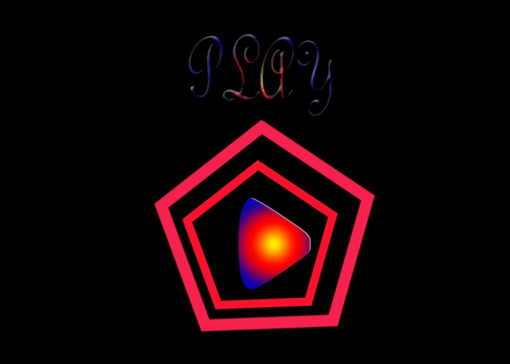
A 2D escape game where the player helps a ball representing a prisoner break free from a cage of obstacles.

An Android music app for creating beats using drum, guitar, and piano instruments.
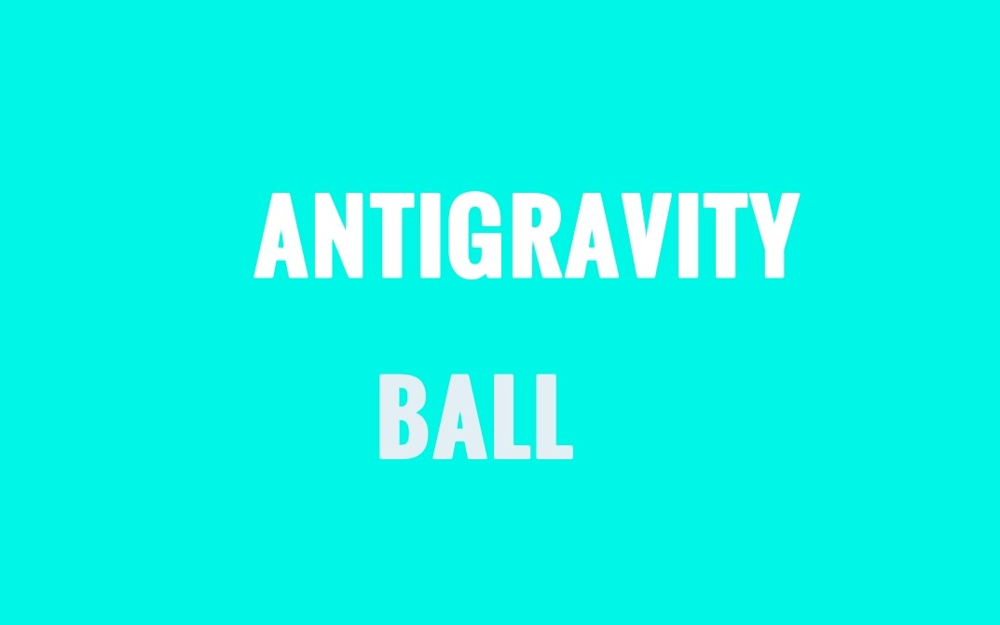
A gravity-defying Android game where the player guides a ball downward through obstacles while controlling its movement.
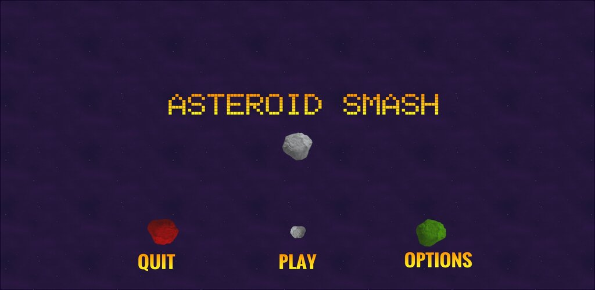
A mini 2D Android game where you expand the central asteroid and defend it from collisions to score more points.
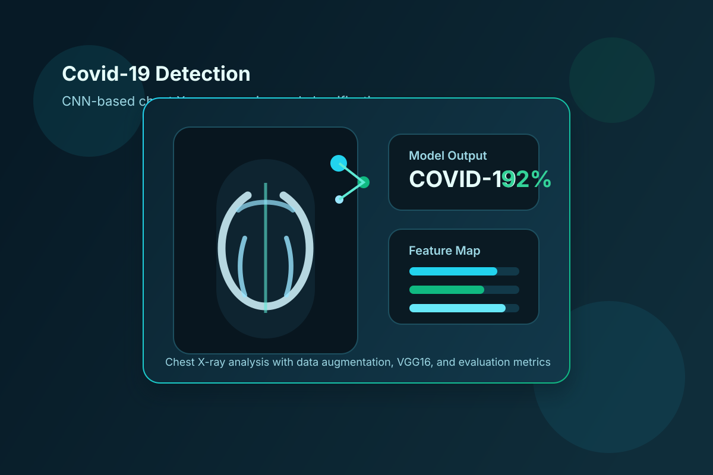
A computer vision blog post about classifying COVID-19 chest X-ray images with machine learning.
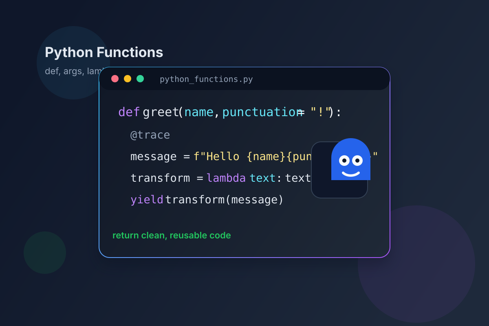
A tutorial on Python functions covering function basics, arguments, return values, decorators, and generators.
I am always happy to chat with curious and thoughtful people. If you would like to discuss research, projects, collaboration, or related ideas, you can book a time below.